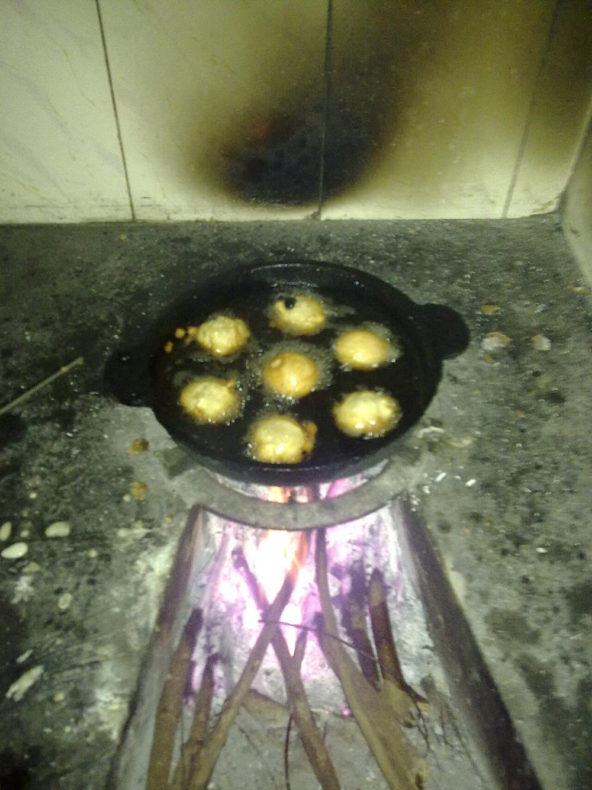

Contains: milk, sesame
Ingredients
Quantities for 20.
- 250g, soaked 4 hours and ground Rice
- 200g, melted and strained Jaggery
- 2 ripe bananas, mashed Raw Bananaripe, not raw, despite the ingredient name
- 4 tbsp, cut into small pieces and fried in ghee Coconut
- 6 pods, seeds ground Cardamom
- 1 tsp Sesame
- 1/4 tsp Dry Ginger Powder
- 2 tbsp Ghee
- 400ml for frying Neutral Oil
- a pinch Salt
Cookware
stovetop
Checked against the ingredient list for ten allergens: milk, egg, fish, crustaceans, tree nuts, peanuts, sesame, mustard, soy and gluten. Brands vary, so read the label on anything new to you.
Before you start
- An unniyappam pan (paniyaram pan) makes this straightforward. Without one, small spoonfuls deep fried work but lose the shape.
- The batter rests. An hour minimum, and it should fall thickly from a spoon.
Method
- Grind the soaked rice to a smooth, thick batter.
- Beat in the melted jaggery, mashed banana, cardamom, dry ginger and salt. Rest 1 hour.
- Fry the coconut pieces and sesame in the ghee until golden and stir them through.
- Heat the oil in the dimpled pan. Fill each hollow three-quarters full.
- Cook 3 minutes until the underside is dark, then turn each one with a skewer and cook 3 minutes more.Turn once only, and only when the edges have set.
- Drain and eat warm.
Storage
Keeps 3 days in an airtight box at room temperature and stays soft. The banana means it will not keep much beyond that.
Nutrition Medium estimate
Low protein: 1 g a serving, 3% of the calories
| Per serving57 g | Per 100 g | |
|---|---|---|
| Calories | 164 kcal | 290 kcal |
| Protein | 1.3 g | 2 g |
| Carbohydrate | 29.1 g | 51 g |
| of which sugars | 14.9 g | 26 g |
| Fibre | 0.8 g | 1 g |
| Fat | 5.3 g | 9 g |
| of which saturated | 2.0 g | 4 g |
| of which unsaturated | 2.9 g | 5 g |
Ingredients given to taste count as zero, so the real figures run a little higher. Nearest database match used for jaggery. Estimated from raw ingredients using USDA FoodData Central.
More like this: Vegetarian Indian recipes · Gluten-free Indian recipes · Kerala recipes
Times, yields, allergens and nutrition are guidance. Use your own judgement on doneness and on storing. More in About.